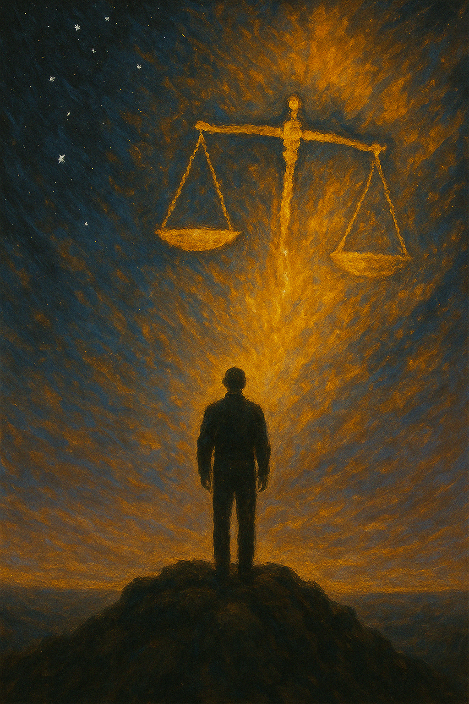

Publicado em 2025-04-20 11:08:24
Luís de Camões, esse mestre de palavras e naufrágios, deixou-nos um soneto que, mais do que poesia, parece relatório sociológico de 2025:
“Os bons vi sempre passar / No mundo graves tormentos; / E para mais me espantar, / Os maus vi sempre nadar / Em mar de contentamentos.”
Parece escrito ontem, não parece? E com pena digital.
Camões, com a sua pena de ferro e espírito de fogo, não se limitou a apontar o absurdo — ele viveu-o. Viu-se pobre, exilado, perseguido, e tudo isso com talento a mais e proteção a menos. Já os medíocres do seu tempo... nadavam em contentamentos. Nada de novo sob o sol, diria um português com 500 anos de paciência e azedume no bolso.
O poeta resume um dilema que ainda hoje atormenta os lúcidos:
“Cuidando alcançar assim / O bem tão mal ordenado, / Fui mau, mas fui castigado.”
É aqui que Camões brilha na ironia trágica.
Tentou adaptar-se, foi mauzinho, talvez escreveu algo mais conforme aos gostos da corte…
Mas nada. Nem prémio de produtividade, nem lugar no painel de comentadores.
Ao contrário dos canalhas com selo institucional, Camões foi sempre um outsider: bom demais para ser domesticado, mau demais para ser promovido.
Claro que sim! Agora temos redes sociais a amplificar os contentamentos dos maus — com filtros, emojis e patrocínio.
Temos concursos televisivos de talento onde ganha quem não canta, políticos que prometem combater a corrupção e são os seus padrinhos de casamento, e algoritmos que recompensam o banal e silenciam o pensamento.
Camões, se vivesse hoje, teria sido banido do Draft2Digital, processado por “uso abusivo de angústia metafísica” e possivelmente bloqueado no X/Twitter por ironia indevida.
Talvez estejamos condenados — como Camões — a ver os maus triunfarem com sorrisos alvos e biografias limpas…
Mas também estamos condenados a não desistir.
Porque o pensamento, mesmo quando desconcertado, é a nossa mais alta música.
E se o mundo não anda concertado, que ao menos cada um de nós afine o seu próprio instrumento — e toque com alma, com coragem, e com humor.
Imagem cortesia de ChatGPT e OpenAI (c)